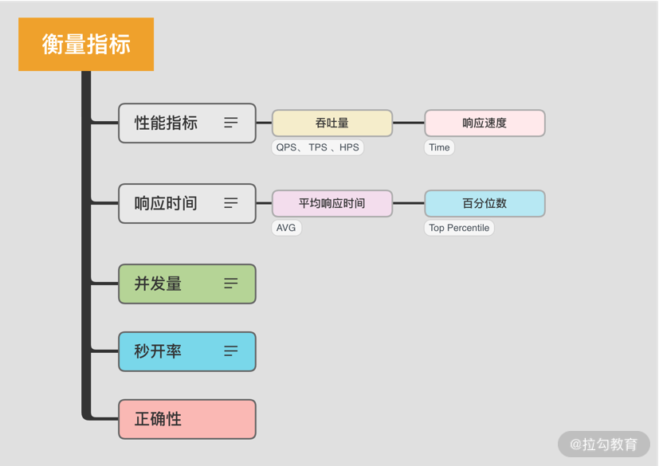
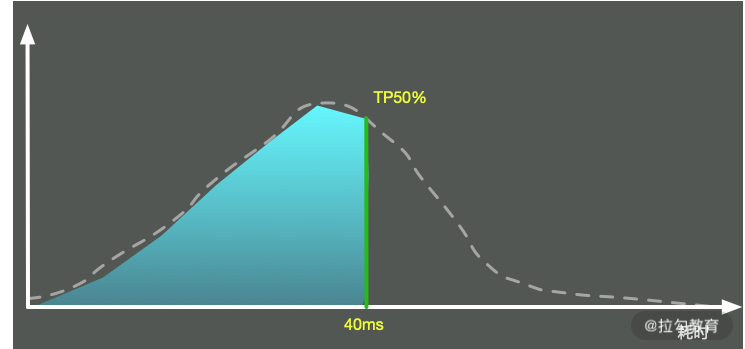

- 00 Java 性能优化，是进阶高级架构师的炼金石.md.html
- 01 理论分析：性能优化，有哪些衡量指标？需要注意什么？.md.html
- 02 理论分析：性能优化有章可循，谈谈常用的切入点.md.html
- 03 深入剖析：哪些资源，容易成为瓶颈？.md.html
- 04 工具实践：如何获取代码性能数据？.md.html
- 05 工具实践：基准测试 JMH，精确测量方法性能.md.html
- 06 案例分析：缓冲区如何让代码加速.md.html
- 07 案例分析：无处不在的缓存，高并发系统的法宝.md.html
- 08 案例分析：Redis 如何助力秒杀业务.md.html
- 09 案例分析：池化对象的应用场景.md.html
- 10 案例分析：大对象复用的目标和注意点.md.html
- 11 案例分析：如何用设计模式优化性能.md.html
- 12 案例分析：并行计算让代码“飞”起来.md.html
- 13 案例分析：多线程锁的优化.md.html
- 14 案例分析：乐观锁和无锁.md.html
- 15 案例分析：从 BIO 到 NIO，再到 AIO.md.html
- 16 案例分析：常见 Java 代码优化法则.md.html
- 17 高级进阶：JVM 如何完成垃圾回收？.md.html
- 18 高级进阶：JIT 如何影响 JVM 的性能？.md.html
- 19 高级进阶：JVM 常见优化参数.md.html
- 20 SpringBoot 服务性能优化.md.html
- 21 性能优化的过程方法与求职面经总结.md.html
- 22 结束语 实践出真知.md.html
- 捐赠
01 理论分析：性能优化，有哪些衡量指标？需要注意什么？
本课时主要从理论分析入手来介绍性能优化的衡量指标，及其理论方法和注意点。
指标是我们衡量很多事物，以及做出行为决策的重要参考。例如在生活中，当你打算买汽车时，会关注很多指标，比如动力性、燃油经济性、制动性、操纵稳定性、平顺性、通过性、排放与噪声等，而这些指标也都有相关的测试和参数，同时也会对这些指标进行一一参考。
这个道理大家都懂，但一旦到了性能优化上，却往往因为缺乏理论依据而选择了错误的优化方向，陷入了盲猜的窘境。在衡量一项优化是否能达到目的之时，不能仅靠感觉，它同样有一系列的指标来衡量你的改进。如果在改动之后，性能不升反降，那就不能叫性能优化了。
所谓性能，就是使用有限的资源在有限的时间内完成工作。最主要的衡量因素就是时间，所以很多衡量指标，都可以把时间作为横轴。
加载缓慢的网站，会受到搜索排名算法的惩罚，从而导致网站排名下降。 因此加载的快慢是性能优化是否合理的一个非常直观的判断因素，但性能指标不仅仅包括单次请求的速度，它还包含更多因素。
接下来看一下，都有哪些衡量指标能够帮我们进行决策。
衡量指标有哪些？

1. 吞吐量和响应速度
分布式的高并发应用并不能把单次请求作为判断依据，它往往是一个统计结果。其中最常用的衡量指标就是吞吐量和响应速度，而这两者也是考虑性能时非常重要的概念。要理解这两个指标的意义，我们可以类比为交通环境中的十字路口。
在交通非常繁忙的情况下，十字路口是典型的瓶颈点，当红绿灯放行时间非常长时，后面往往会排起长队。
从我们开车开始排队，到车经过红绿灯，这个过程所花费的时间，就是响应时间。
当然，我们可以适当地调低红绿灯的间隔时间，这样对于某些车辆来说，通过时间可能会短一些。但是，如果信号灯频繁切换，反而会导致单位时间内通过的车辆减少，换一个角度，我们也可以认为这个十字路口的车辆吞吐量减少了。

像我们平常开发中经常提到的，QPS 代表每秒查询的数量，TPS 代表每秒事务的数量，HPS 代表每秒的 HTTP 请求数量等，这都是常用的与吞吐量相关的量化指标。
在性能优化的时候，我们要搞清楚优化的目标，到底是吞吐量还是响应速度。 有些时候，虽然响应速度比较慢，但整个吞吐量却非常高，比如一些数据库的批量操作、一些缓冲区的合并等。虽然信息的延迟增加了，但如果我们的目标就是吞吐量，那么这显然也可以算是比较大的性能提升。
一般情况下，我们认为：
- 响应速度是串行执行的优化，通过优化执行步骤解决问题；
- 吞吐量是并行执行的优化，通过合理利用计算资源达到目标。
我们平常的优化主要侧重于响应速度，因为一旦响应速度提升了，那么整个吞吐量自然也会跟着提升。
但对于高并发的互联网应用来说，响应速度和吞吐量两者都需要。这些应用都会标榜为高吞吐、高并发的场景，用户对系统的延迟忍耐度很差，我们需要使用有限的硬件资源，从中找到一个平衡点。
2. 响应时间衡量
既然响应时间这么重要，我们就着重看一下响应时间的衡量方法。
（1）平均响应时间
我们最常用的指标，即平均响应时间(AVG)，该指标能够体现服务接口的平均处理能力。它的本质是把所有的请求耗时加起来，然后除以请求的次数。举个最简单的例子，有 10 个请求，其中有 2 个 1ms、3 个 5ms、5 个 10ms，那么它的平均耗时就是(21+35+5*10)/10=6.7ms。
除非服务在一段时间内出现了严重的问题，否则平均响应时间都会比较平缓。因为高并发应用请求量都特别大，所以长尾请求的影响会被很快平均，导致很多用户的请求变慢，但这不能体现在平均耗时指标中。
为了解决这个问题，另外一个比较常用的指标，就是百分位数(Percentile)。
（2）百分位数

这个也比较好理解。我们圈定一个时间范围，把每次请求的耗时加入一个列表中，然后按照从小到大的顺序将这些时间进行排序。这样，我们取出特定百分位的耗时，这个数字就是 TP 值。可以看到，TP 值(Top Percentile)和中位数、平均数等是类似的，都是一个统计学里的术语。
它的意义是，超过 N% 的请求都在 X 时间内返回。比如 TP90 = 50ms，意思是超过 90th 的请求，都在 50ms 内返回。
这个指标也是非常重要的，它能够反映出应用接口的整体响应情况。比如，某段时间若发生了长时间的 GC，那它的某个时间段之上的指标就会产生严重的抖动，但一些低百分位的数值却很少有变化。
我们一般分为 TP50、TP90、TP95、TP99、TP99.9 等多个段，对高百分位的值要求越高，对系统响应能力的稳定性要求越高。
在这些高稳定性系统中，目标就是要干掉严重影响系统的长尾请求。这部分接口性能数据的收集，我们会采用更加详细的日志记录方式，而不仅仅靠指标。比如，我们将某个接口，耗时超过 1s 的入参及执行步骤，详细地输出在日志系统中。
3. 并发量
并发量是指系统同时能处理的请求数量，这个指标反映了系统的负载能力。
在高并发应用中，仅仅高吞吐是不够的，它还必须同时能为多个用户提供服务。并发高时，会导致很严重的共享资源争用问题，我们需要减少资源冲突，以及长时间占用资源的行为。
针对响应时间进行设计，一般来说是万能的。因为响应时间减少，同一时间能够处理的请求必然会增加。值得注意的是，即使是一个秒杀系统，经过层层过滤处理，最终到达某个节点的并发数，大概也就五六十左右。我们在平常的设计中，除非并发量特别低，否则都不需要太过度关注这个指标。
4. 秒开率
在移动互联网时代，尤其对于 App 中的页面，秒开是一种极佳的用户体验。如果能在 1 秒内加载完成页面，那用户可以获得流畅的体验，并且不会产生更多的焦虑感。
通常而言，可以根据业务情况设定不同的页面打开标准，比如低于 1 秒内的数据占比是秒开率。业界优秀的公司，比如手淘，其页面的秒开率基本可达到 80% 以上。
5. 正确性
说一个比较有意思的事情。我们有个技术团队，在进行测试的时候，发现接口响应非常流畅，把并发数增加到 20 以后，应用接口响应依旧非常迅速。
但等应用真正上线时，却发生了重大事故，这是因为接口返回的都是无法使用的数据。
其问题原因也比较好定位，就是项目中使用了熔断。在压测的时候，接口直接超出服务能力，触发熔断了，但是压测并没有对接口响应的正确性做判断，造成了非常低级的错误。
所以在进行性能评估的时候，不要忘记正确性这一关键要素。
有哪些理论方法？
性能优化有很多理论方法，比如木桶理论、基础测试、Amdahl 定律等。下面我们简单地讲解一下最常用的两个理论。
1. 木桶理论
一只木桶若想要装最多的水，则需要每块木板都一样长而且没有破损才行。如果有一块木板不满足条件，那么这只桶就无法装最多的水。
能够装多少水，取决于最短的那块木板，而不是最长的那一块。
木桶效应在解释系统性能上，也非常适合。组成系统的组件，在速度上是良莠不齐的。系统的整体性能，就取决于系统中最慢的组件。
比如，在数据库应用中，制约性能最严重的是落盘的 I/O 问题，也就是说，硬盘是这个场景下的短板，我们首要的任务就是补齐这个短板。
2. 基准测试、预热
基准测试(Benchmark)并不是简单的性能测试，是用来测试某个程序的最佳性能。
应用接口往往在刚启动后都有短暂的超时。在测试之前，我们需要对应用进行预热，消除 JIT 编译器等因素的影响。而在 Java 里就有一个组件，即 JMH，就可以消除这些差异。
注意点

1. 依据数字而不是猜想
有些同学对编程有很好的感觉，能够靠猜测列出系统的瓶颈点，这种情况固然存在，但却非常不可取。复杂的系统往往有多个影响因素，我们应将性能分析放在第一位，把性能优化放在次要位置，直觉只是我们的辅助，但不能作为下结论的工具。
进行性能优化时，我们一般会把分析后的结果排一个优先级（根据难度和影响程度），从大处着手，首先击破影响最大的点，然后将其他影响因素逐一击破。
有些优化会引入新的性能问题，有时候这些新问题会引起更严重的性能下降，你需要评估这个连锁反应，确保这种优化确实需要，同时需要使用数字去衡量这个过程，而不是靠感觉猜想。
2. 个体数据不足信
你是否有这样的经历：某个知名网站的访问速度真慢，光加载就花费了 x 秒。其实，仅凭一个人的一次请求，就下了“慢”这个结论，是不合适的，而在我们进行性能评估的时候，也往往会陷入这样的误区。
这是因为个体请求的小批量数据，可参考价值并不是非常大。响应时间可能因用户的数据而异，也可能取决于设备和网络条件。
合理的做法，是从统计数据中找到一些规律，比如上面所提到的平均响应时间、TP 值等，甚至是响应时间分布的直方图，这些都能够帮我们评估性能质量。
3. 不要过早优化和过度优化
虽然性能优化有这么多好处，但并不代表我们要把每个地方都做到极致，性能优化也是要有限度的。程序要运行地正确，要比程序运行得更快还要困难。
计算机科学的鼻祖”Donald Knuth” 曾说：“过早的优化是万恶之源”，就是这个道理。
如果一项改进并不能产生明显的价值，那我们为什么还要花大力气耗在上面呢？比如，某个应用已经满足了用户的吞吐量需求和响应需求，但有的同学热衷于 JVM 的调优，依然花很大力气在参数测试上，这种优化就属于过度优化。
时间要花在刀刃上，我们需要找到最迫切需要解决的性能点，然后将其击破。比如，一个系统主要是慢在了数据库查询上，结果你却花了很大的精力去优化 Java 编码规范，这就是偏离目标的典型情况。
一般地，性能优化后的代码，由于太过于追求执行速度，读起来都比较晦涩，在结构上也会有很多让步。很显然，过早优化会让这种难以维护的特性过早介入到你的项目中，等代码重构的时候，就会花更大的力气去解决它。
正确的做法是，项目开发和性能优化，应该作为两个独立的步骤进行，要做性能优化，要等到整个项目的架构和功能大体进入稳定状态时再进行。
4. 保持良好的编码习惯
我们上面提到，不要过早地优化和过度优化，但并不代表大家在编码时就不考虑这些问题。
比如，保持好的编码规范，就可以非常方便地进行代码重构；使用合适的设计模式，合理的划分模块，就可以针对性能问题和结构问题进行聚焦、优化。
在追求高性能、高质量编码的过程中，一些好的习惯都会积累下来，形成人生道路上优秀的修养和品质，这对我们是大有裨益的。
小结
在本课时，我们简单地了解了衡量性能的一些指标，比如常见的吞吐量和响应速度，还探讨了一些其他的影响因素，比如并发量、秒开率、容错率等。
同时，我们也谈到了木桶理论和基准测试等两种过程方法，并对性能测试中的一些误区和注意点进行了介绍，现在你应该对如何描述性能有了更好的理解。像一些专业的性能测试软件，如 JMeter、LoadRunner 等，就是在这些基础性能指标上进行的扩展。我们在平常的工作中，也应该尽量使用专业术语，这样才能对系统性能进行正确评估。
了解了优化指标后，有了行动导向，那接下来该从哪些方面入手呢？ Java 性能优化是否有可以遵循的规律呢？
下一课时，我们将从整体上，来介绍一下性能优化都有哪些考量点。
© 2019 - 2023 Liangliang Lee. Powered by gin and hexo-theme-book.